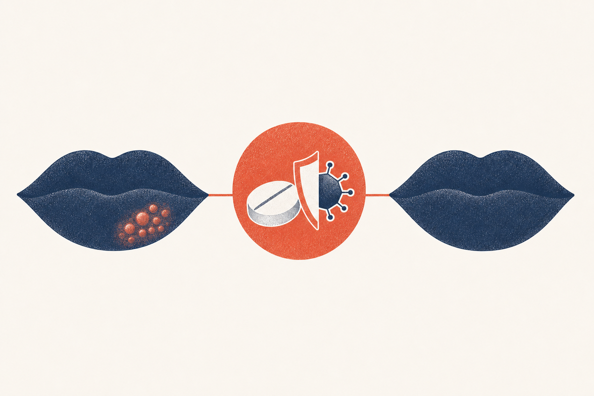

Key Takeaways
- The FDA-approved valacyclovir regimen for cold sores is 2 grams twice, 12 hours apart, a single day of just two doses.[2][1]
- Valacyclovir is a prodrug of acyclovir that produces several-fold higher blood levels of acyclovir per oral dose, allowing less frequent dosing.[2][3]
- Started at the earliest tingle, the one-day course shortens the episode by about a day and speeds healing and pain relief.[1]
- Oral antivirals including valacyclovir outperform topical antivirals for cold sores, a finding confirmed across network meta-analysis and systematic review.[5][8]
- Timing is decisive: begin valacyclovir at the prodrome rather than waiting for a developed blister.[1][12]
- Valacyclovir is generally well tolerated; common side effects include headache and nausea, and dose adjustment is needed in reduced kidney function.[2]
- A same-day telehealth visit can provide valacyclovir within the narrow treatment window, which is why it is a strong fit for cold sore care.[2][1]

What Valacyclovir Is
Valacyclovir, sold under the brand name Valtrex, is a prescription antiviral medication in the nucleoside analogue class used to treat infections caused by herpes viruses. It is approved for several indications, including the episodic treatment of recurrent cold sores (herpes labialis) in otherwise healthy adults.[2]
Valacyclovir is not a brand-new molecule but a prodrug of acyclovir, the original herpes antiviral. A prodrug is an inactive form that the body converts into the active drug. When you swallow valacyclovir, enzymes in the gut and liver rapidly convert nearly all of it to acyclovir, which then does the actual antiviral work in the body.[2][3]
The reason this matters is practical. Acyclovir itself is poorly absorbed when taken by mouth, so it has to be dosed frequently to keep blood levels adequate. Valacyclovir's improved absorption delivers much higher blood levels of acyclovir from a single dose, which is what allows the convenient two-dose, one-day cold sore regimen.[2][3]
How Valacyclovir Works
Inside an infected cell, herpes simplex virus uses its own enzyme to copy its DNA so it can multiply. Acyclovir, the active form of valacyclovir, is incorporated into that viral DNA copying process and acts as a chain terminator, stopping the viral DNA from being built. Because acyclovir is preferentially activated by a viral enzyme, it targets the infected cells while largely sparing uninfected ones, which is why it is generally well tolerated.[2][4]
The key pharmacokinetic fact is bioavailability, the fraction of an oral dose that actually reaches the bloodstream. Oral acyclovir has relatively low bioavailability, on the order of 10 to 20 percent, whereas valacyclovir delivers about 54 percent of its dose into the bloodstream as acyclovir. The result is that two daily-sized doses of valacyclovir can achieve drug exposure comparable to the much more frequent dosing acyclovir requires.[2][3]
Because the drug interrupts viral replication rather than dissolving an already-formed blister, its benefit is greatest when replication is peaking, which is exactly what happens in the first day of an outbreak.[1][12]
The One-Day Dosing Regimen
The cold sore dose of valacyclovir is refreshingly simple: 2 grams (2,000 mg) taken twice, with the two doses separated by about 12 hours, and nothing more. That is the entire course, one day of treatment.[2]
This regimen was established in two large randomized, placebo-controlled trials. Patients took the first 2-gram dose as soon as they recognized the earliest symptom, then a second 2-gram dose 12 hours later. The treatment reduced the duration of the cold sore episode and significantly shortened time to healing and time to cessation of pain.[1]
The two doses should ideally be taken at the first sign, but the trials also demonstrated benefit when treatment began at the first visible bump. It is worth starting even if you are a few hours past the ideal moment; a partial benefit is still a benefit.[1][4] A 2026 meta-analysis of orolabial herpes clinical trials has called for standardized endpoint definitions, part of a field consolidating around short-course, early oral regimens like this one.[7]
Why Timing Is Decisive
Valacyclovir is a race against the virus, and the starting line is the prodrome. Because HSV replication is most intense in the first day after reactivation, the drug has the most to interrupt when it is present early. The trials showed the largest effect when treatment started during the tingling phase or at the earliest visible papule, with shorter episodes overall.[1][12]
Starting valacyclovir after a well-developed cluster of blisters exists still helps, but less, because much of the tissue damage has already occurred. The clinical message is consistent across the cold sore literature: do not wait to be sure. If you have felt the tingle in a spot where you have had cold sores before, begin treatment or contact a clinician right away.[1][4][12]
This timing sensitivity is exactly why valacyclovir pairs so well with telehealth. The decision and prescription can happen within the narrow window, often the same day, unlike waiting for an in-person appointment.[2][1]
Valacyclovir vs Acyclovir
Both drugs end up doing the same thing, delivering acyclovir to infected cells, but they differ in convenience and, to a lesser degree, in cost. The comparison is essentially a dosing problem.
| Feature | Valacyclovir | Acyclovir |
|---|---|---|
| Cold sore regimen | 2 g twice, 12 hours apart (one day)[2] | 400 mg five times daily for 5 days[4] |
| Total doses | 2 | 25 |
| Bioavailability | ~54%[2] | ~10 to 20%[3] |
| Efficacy | Both effective; comparable when dosed appropriately.[4][5] | |
| Typical cost | Both available as inexpensive generics; cost varies by pharmacy.[2][3] | |
For most people, the difference comes down to convenience. Remembering five doses a day for five days is genuinely hard, and a missed dose costs efficacy. Two doses in one day is far easier to complete, which is why valacyclovir is often preferred for episodic cold sore treatment despite acyclovir's lower cost.[4][5]
Valacyclovir vs Topical Antivirals
The gap between valacyclovir and the topical antivirals is wider than many patients expect. Over-the-counter docosanol 10% cream and prescription penciclovir or acyclovir creams are applied many times a day and shorten healing by only about half a day to a day, and they do not meaningfully reduce viral shedding.[4][8][13] A combination topical (acyclovir with hydrocortisone) reduces progression to ulcerated lesions through its anti-inflammatory component, but it remains a topical, adjunct therapy.[9][8]
The network meta-analysis by Koe and colleagues ranked systemic oral antivirals ahead of topical agents for preventing and managing cold sores, and the 2025 systematic review by Mancini and colleagues reached the same conclusion. For a patient whose goal is the shortest, mildest possible episode, oral valacyclovir is the stronger choice, with topicals reserved as a modest adjunct when oral therapy is not available or not preferred.[5][8]
Side Effects and Safety
Valacyclovir is generally very well tolerated, especially when used as a one-day course. The most common side effects reported in clinical trials include headache, nausea, and stomach discomfort, and these are usually mild and short-lived.[2] Because the drug is cleared by the kidneys, the dose must be reduced in people with reduced kidney function, and rare but serious kidney and nervous system side effects can occur, particularly at high doses or when kidney function is poor.[2]
| Concern | What to know |
|---|---|
| Common side effects | Headache, nausea, stomach pain, usually mild[2] |
| Kidney function | Dose adjustment needed in reduced kidney function; discuss with a clinician[2] |
| Hydration | Staying hydrated reduces the risk of kidney-related effects, especially at high doses[2] |
| Pregnancy and breastfeeding | Discuss with a clinician; used when benefit outweighs risk[2] |
| Drug interactions | Few important interactions, but disclose kidney medications and others to your clinician[2] |
Serious side effects are uncommon with the short cold sore regimen. Still, anyone with reduced kidney function, and anyone over 65, should make sure the prescriber knows before taking valacyclovir.[2]
Who Should Not Take Valacyclovir
Valacyclovir is not appropriate for everyone. It should be avoided by people with a known allergy or serious reaction to valacyclovir or acyclovir.[2] As noted, dose adjustment is required in reduced kidney function, and the drug should be used with extra caution in the elderly and in anyone with dehydration. People taking other medications that affect the kidneys should have a clinician review before starting.[2]
These exclusions are a reminder that valacyclovir, while safe for most people at the one-day dose, is a real prescription drug, not a supplement. A clinician review of your kidney health, allergies, and medication list is part of safe prescribing, and it is one of the reasons a proper evaluation, in person or by telehealth, precedes a prescription.[2][11]
Suppressive (Daily) Valacyclovir Dosing
For people with frequent, painful, or otherwise burdensome cold sore recurrences, valacyclovir can also be used as daily suppressive therapy to prevent outbreaks from starting, rather than treating each episode after it is underway. Typical suppressive doses for oral herpes are lower than the episodic dose, often 500 to 1,000 mg daily, individualized to the patient.[4][11]
Systematic reviews support that oral antivirals, including valacyclovir, reduce the frequency of recurrent herpes labialis when taken daily, and the Cochrane review of prevention interventions is consistent with this.[6][14] Suppression does not eliminate the virus, and outbreaks can return after stopping, but it reliably reduces how many occur while taken.[6]
Suppressive therapy is worth discussing with a clinician if you have roughly four or more outbreaks a year, if your outbreaks are severe, or if your work or personal circumstances make recurring sores particularly problematic.[14][11]
| Goal | Regimen | When it is used |
|---|---|---|
| Treat an episode | 2 g twice, 12 hours apart, one day[2] | At the first sign of every outbreak |
| Prevent recurrences | 500 to 1,000 mg once daily (typical)[4] | Frequent (roughly 4-plus per year) or severe episodes[6] |
| Both | Suppression plus early episodic top-up | Individualized with a clinician[11] |
Getting Valacyclovir via Telehealth
Because the valacyclovir treatment window is measured in hours, cold sores are a natural fit for telehealth. A clinician can confirm the likely diagnosis from a description, and where helpful a photo, then prescribe the one-day regimen the same day, so you can start treatment at or near the prodrome rather than days later.[2][1]
Telehealth prescribing of antivirals for recurrent cold sores is routine and appropriate for straightforward cases in otherwise healthy adults. It works best when you recognize your own prodrome and seek care immediately. For anything atypical, a large or unusually painful sore, frequent recurrences needing suppression, immunocompromised status, or eye symptoms, the clinician may recommend a more thorough in-person evaluation.[11][10][12]
Valacyclovir requires a prescription, so while the one-day course is the goal, it begins with a clinician review of your symptoms and any relevant medical history, not with a self-serve purchase.[2]
Frequently Asked Questions
The most common side effects are headache, nausea, and stomach discomfort, usually mild. Less commonly, kidney or nervous system effects can occur, especially with poor kidney function or high doses.[2]
No. People allergic to valacyclovir or acyclovir should not take it, and the dose must be reduced in reduced kidney function. A clinician should review your history before prescribing.[2]
Valacyclovir can be taken with or without food. Taking it with water and staying well hydrated is recommended.[2]
References
- Spruance SL, Jones TM, Blatter MM, Vargas-Cortes M, Barber J, Hill J, et al. High-dose, short-duration, early valacyclovir therapy for episodic treatment of cold sores: results of two randomized, placebo-controlled, multicenter studies Antimicrobial Agents and Chemotherapy. 2003;47(3):1072-1080.. doi:10.1128/AAC.47.3.1072-1080.2003
- U.S. Food and Drug Administration. VALTREX (valacyclovir hydrochloride) prescribing information FDA.. FDA Valtrex label
- U.S. Food and Drug Administration. ZOVIRAX (acyclovir) prescribing information FDA.. FDA Zovirax label
- Cernik C, Gallina K, Brodell RT. The treatment of herpes simplex infections: an evidence-based review Archives of Internal Medicine. 2008;168(11):1137-1144.. doi:10.1001/archinte.168.11.1137
- Koe KH, Veettil SK, Maharajan MK, Syeed MS, Nair AB, Gopinath D. Comparative efficacy of antiviral agents for prevention and management of herpes labialis: a systematic review and network meta-analysis Journal of Evidence-Based Dental Practice. 2023;23(1):101778.. doi:10.1016/j.jebdp.2022.101778
- Rahimi H, Mara T, Costella J, Speechley M, Bohay R. Effectiveness of antiviral agents for the prevention of recurrent herpes labialis: a systematic review and meta-analysis Oral Surgery, Oral Medicine, Oral Pathology, Oral Radiology. 2012;113(5):618-627.. doi:10.1016/j.oooo.2011.10.010
- Sloan A, Mortezavi M, Gerhart J, Banerjee A, Alami NN, Najera I, et al. Orolabial and genital herpes clinical trials: a meta-analysis of endpoints Open Forum Infectious Diseases. 2026;13:ofaf776.. doi:10.1093/ofid/ofaf776
- Mancini A, Inchingolo AM, Marinelli G, Trilli I, Sardano R, Pezzolla C, et al. Topical and systemic therapeutic approaches in the treatment of oral herpes simplex virus infection: a systematic review International Journal of Molecular Sciences. 2025;26(17):8490.. doi:10.3390/ijms26178490
- Hull CM, Harmenberg J, Arlander E, Aoki F, Bring J, Darpö B, et al. Early treatment of cold sores with topical ME-609 decreases the frequency of ulcerative lesions: a randomized, double-blind, placebo-controlled, patient-initiated clinical trial Journal of the American Academy of Dermatology. 2011;64(4):696.e1-11.. doi:10.1016/j.jaad.2010.08.012
- Opstelten W, Neven AK, Eekhof J. Treatment and prevention of herpes labialis Canadian Family Physician. 2008;54(12):1683-1687.. PMID 19074705
- Centers for Disease Control and Prevention. Herpes: STI treatment guidelines, 2021 CDC Division of STD Prevention.. cdc.gov herpes treatment guidelines
- Woo SB, Challacombe SJ. Management of recurrent oral herpes simplex infections Oral Surgery, Oral Medicine, Oral Pathology, Oral Radiology, and Endodontology. 2007;103(Suppl):S12.e1-18.. doi:10.1016/j.tripleo.2006.11.004
- Sacks SL, Thisted RA, Jones TM, Barbarash RA, Mikolich DJ, Ruoff GE, et al. Clinical efficacy of topical docosanol 10% cream for herpes simplex labialis: a multicenter, randomized, placebo-controlled trial Journal of the American Academy of Dermatology. 2001;45(2):222-230.. doi:10.1067/mjd.2001.116215
- Chi CC, Wang SH, Delamere FM, Wojnarowska F, Peters MC, Kanjirath PP. Interventions for prevention of herpes simplex labialis (cold sores on the lips) Cochrane Database of Systematic Reviews. 2015;(8):CD010095.. doi:10.1002/14651858.CD010095.pub2